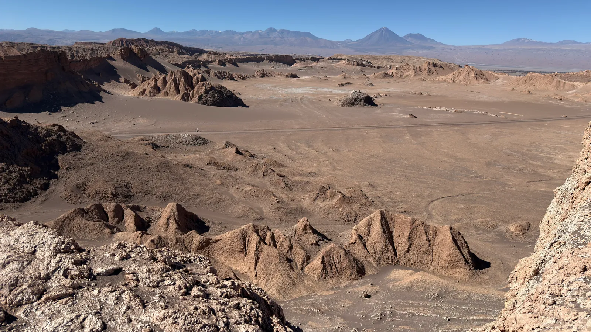
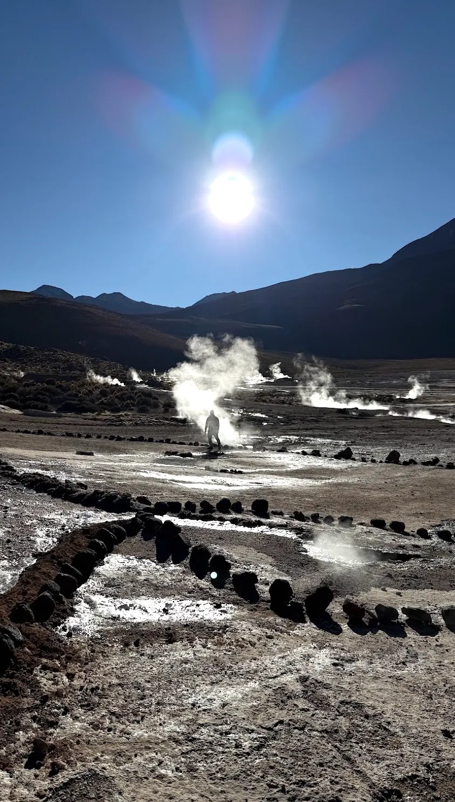
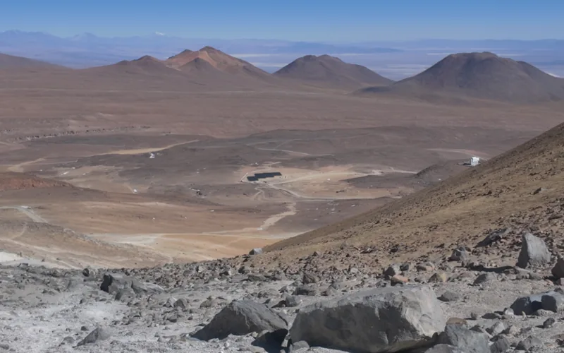
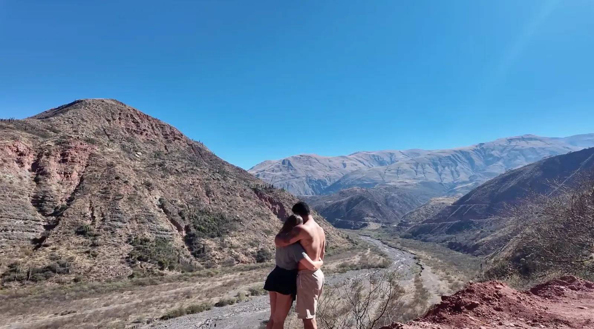
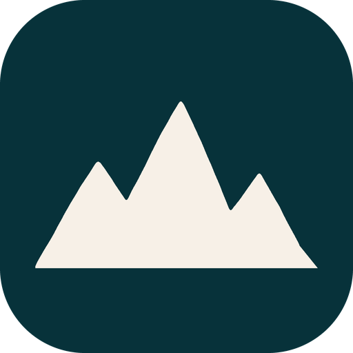

Chile
O Deserto do Atacama e suas paisagens de outro planeta. O que fizemos em San Pedro de Atacama, com os vídeos de cada passeio.
San Pedro de Atacama
Deserto do Atacama · cerca de 2.400 m
Valle de la Luna
Dunas, paredões e formações de sal e pedra que parecem de outro planeta. Um dos lugares que mais surpreenderam a gente no Atacama.

Geysers del Tatio
Colunas de vapor saindo do chão ao amanhecer, a mais de 4.300 m. No dia em que fomos, fazia -14°C.
- Saída às 4h–5h
- Abaixo de zero
Valle de la Muerte
Dunas e cristas avermelhadas pertinho de San Pedro.

Cerro Toco
Um vulcão de 5.604 m que tentamos subir a pé depois que o carro não aguentou. Voltamos a uns 400 m do cume.
- Cume a 5.604 m
- Vá de 4x4
Próximo destino

Da Argentina ao Atacama de carro: nosso roteiro
Roteiro parada por parada pelo norte argentino até San Pedro de Atacama.
Ler →Geysers del Tatio: como é o passeio mais frio do Atacama
Saída de madrugada, -14°C no dia em que fomos e gêiseres a mais de 4.300 m. O que levar e como se preparar.
Ler →
Seguro viagem para Argentina e Chile: é obrigatório?
O que mudou na Argentina, o que vale para o Chile e o que conferir antes de contratar para uma viagem de carro.
Ler →